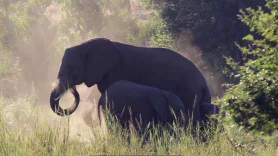
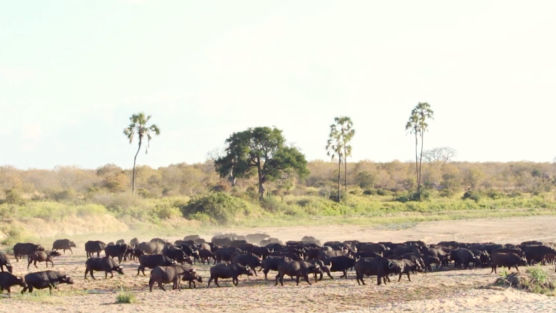

At Munjiri Videos, we believe in the power of storytelling to drive change. As more brands and businesses prioritize sustainability, the need for sustainable video production grows. Whether you're a nature-driven organization, an eco-tourism business, or a sustainable brand, our videos are designed to connect your mission with your audience in an authentic and impactful way. We’re proud to work with brands and initiatives that focus on creating positive change, helping them share their stories and inspire others to take action for a better, more sustainable world.
In today’s world, the stories we share can help shape a better future. As more people seek eco-friendly products and values, brands are shifting toward more genuine, sustainable messaging. Sustainable video production is a powerful way to communicate these values in a way that truly connects with your audience. At Munjiri Videos, we specialize in environmental storytelling, bringing your mission to life with visuals and narratives that inspire action. Whether you're focused on regenerative farming, wildlife, eco-tourism, or ethical craftsmanship, we're here to help tell your story in a way that matters.
For this video we worked with Trocaire and the Permaculture Paradise Institute in Malawi. This project shows how agro-ecology and indigenous knowledge can rejuvenate land and empower communities.
Key Highlights:
Agro-Ecology Solutions: How local resources and regenerative farming systems are combating hunger and poverty.
Food Security & Community Impact: Growing over 200 crops, empowering local farmers, and addressing food insecurity in rural Malawi.
Trocaire Partnership: Supporting sustainable farming initiatives to build a brighter future for local communities.
Impact:
This video showcases how regenerative agriculture can address pressing issues like hunger, poverty, and climate change. By working with local communities and using sustainable techniques, we can create lasting solutions that benefit both people and the planet.
We recently had the chance to film Olivia Fite, founder of Collective Wonder Herb School in Portugal. Olivia’s mission is simple: help people reconnect with nature through herbal medicine and community.
Her school offers:
Community Herbal Foundations – an online course for anyone wanting to learn herbalism.
Wild Medicine Making – hands-on workshops in Portugal, teaching plant-based healing in a natural setting.
With a team of herbalists from Portugal, the U.K., and the U.S.A., Collective Wonder is all about practical skills, traditional knowledge, and deepening our relationship with plants.
This video tells Olivia’s story and how she’s inspiring others to embrace herbalism and nature in their daily lives.
We teamed up with Kusini Safaris at Matetsi Lodge, set along the Zambezi River in Zimbabwe. While the landscapes and wildlife are breathtaking, Kusini Safaris knows that safaris are about people too, the travelers who experience them and the local communities who protect these incredible places.
This video captures the beauty of Matetsi, the wildlife, and the people who make conservation possible.
The Wild Times creates unforgettable experiences that help people re-wild, explore, and reconnect with nature. Set in stunning natural locations, these retreats bring together adventurers from all walks of life to unwind, challenge themselves, and rediscover the joy of the outdoors. From salty sea air to windswept landscapes, every experience leaves you feeling refreshed, grounded, and just a little bit wilder.

Just outside Lilongwe, African Bat Conservation is working to protect bat populations through research and education. While bats are often misunderstood, they play a vital role in agriculture, especially in boosting banana harvests by pollinating plants and controlling pests.
We ventured into the banana fields at night to capture this unique relationship between bats and farmers. Seeing these creatures up close was unforgettable, and it’s clear they’re essential to sustainable agriculture and healthy ecosystems.
At Munjiri Videos, we create impact-driven stories for conservation projects like this, helping to share their mission with the world.
Madeby_ goes beyond greenwashing, giving you real insight into how products are made and who makes them. Every piece is crafted by skilled artisans who carefully choose materials and techniques that balance quality with ethics. By sharing these stories, Madeby_ ensures you don’t have to choose between style and values, you can have both, knowing your purchases are made with care, transparency, and integrity.
Perched above Lake Malawi, The Mushroom Farm is more than just an ecolodge,it’s a hub for sustainability and regenerative tourism. This off-grid retreat features stunning views, fresh vegetarian meals, and eco-friendly accommodation.
Sustainability Initiatives:
Supporting local schools and community projects.
Running adult literacy classes and permaculture workshops.
Practicing sustainable living through eco-friendly infrastructure.

Brand Video Production
Social Media Video Production
Nature Video Production
Creative Video Productions
Charity Video Production
Drone Videographer
Event Video Production
Product Video Production
Travel Video Production
Learn Video Making
Video Storytelling
Video Making Tips
Video Marketing & Social Media Strategies
Nature Stories
Behind the Scenes
Client Stories
Locations & Travel
Location
Based in Portugal and South Africa, offering video production services worldwide.
Email: katy@munjiri.com
Get updates and free resources.